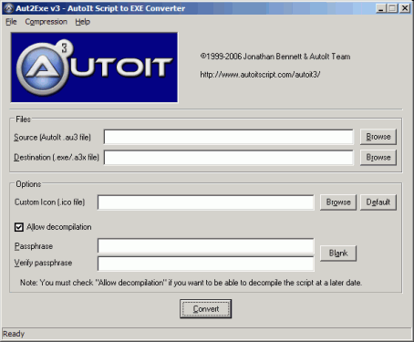
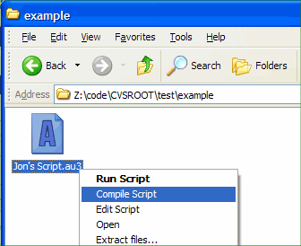

It is possible to take your .au3 script and compile it into a standalone executable; this executable can be used without the need for AutoIt to be installed and without the need to have AutoIt3.exe on the machine. In addition, the compiled script is compressed and encrypted and there is the option to bind additional files (also compressed/encrypted) to the exe using the FileInstall function. Also, any #include files will also be compiled into the script so they are not required at run-time.
Caution: the script to be compiled must be free of syntax error as the compilation will not check the syntax.
Aut2Exe can be used in three ways:
Only available if full install performed.
1. Open the Start Menu and browse to the AutoIt v3 group.
2. Click Script Compiler \ Convert .au3 to .exe
3. The main Aut2Exe interface should appear.

4. Use the Browse buttons to select your input (.au3) and output (.exe) files.
5. If you like you can change the icon of the resulting .exe - just browse to the icon you want (some example icons are supplied in Program Files\AutoIt3\Aut2Exe\Icons).
6. If you don't want anyone to be able to decompile your script (when a decompiler is made available) then you should enter a passphrase.
7. The only other option you might wish to change is the compression level (especially if using FileInstall to add extra files). Use the Compression menu to set this. As with all compression routines the better the compression you select the slower it will be. However, no matter what compression level you select the decompression speed (when the .exe is run) is the same.
8. Click on Convert to compile the script.
Note: scripts can be compile with .a3x extension. They should be run with AutoIt.exe filename.a3x. The .a3x contains the script itself with all referred #include plus the FileInstall files. This format allow to distribute smaller files as they don't include the AutoIt3.exe in each compile script. You still need to have it accessible on the target machine but just AutoIt3.exe.
Only available if full install performed.
1. In Explorer browse to the .au3 file that you wish to compile.
2. Right-click the file to access the pop-up menu.

3. The file will be silently compiled with the same filename - just with a .exe extension.
When compiling in this way, Aut2Exe uses current icon/compression settings (from the last time Aut2Exe was run manually as in method 1).
The Aut2Exe.exe program can be run from the command line as follows:
Aut2exe.exe /in <infile.au3> [/out <outfile.exe>] [/icon
<iconfile.ico>] [/nodecompile] [/comp 0-4] [/pass <passphrase>]
[/nopack]
Long filenames should be enclosed in double-quotes like "C:\Program Files\Test\test.au3". If no "out" file is given the input filename is used with a .exe extension.
The compiled script and additional files added with FileInstall are compressed with my own (Jon) compression scheme.
Because a compiled script must "run" itself without a password it needs to be able to decrypt itself - i.e., the encryption is two-way. For this reason you should regard the compiled exe as being encoded rather than completely safe. For example, if I wrote a script that contained a username and password (say, for a desktop rollout) then I would be happy using something like a workstation-level user/password but I would not consider it safe for a domain/entire network password unless I was sure that the end-user would not have easy access to the .exe file.